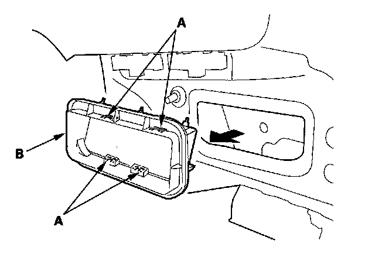

Cabin Ventilation Duct: Service and Repair
Rear Air Outlet Replacement1. Remove the rear bumper

2. Detach the hooks (A), then remove the rear air outlet (B). Take care not to scratch the body.
3. Install the air outlet by pushing on the hook portions until the hooks snap into place.